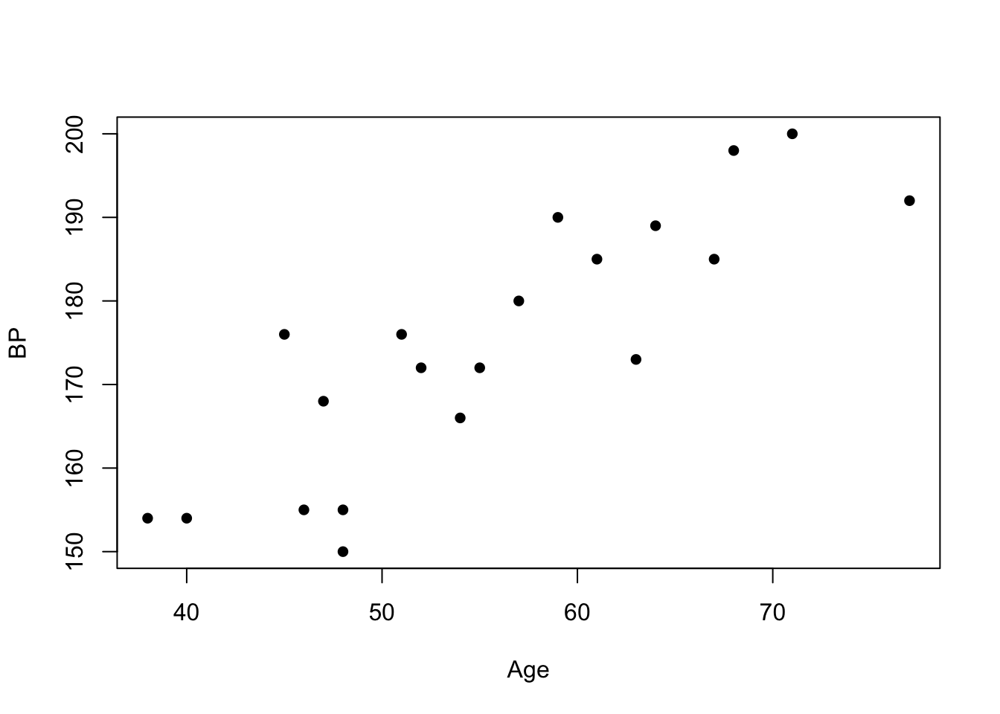

Teniendo un conjunto de datos, y suponiendo que cada dato es un par ordenado (x,y), una regresión lineal simple genera una recta cuyos puntos (x’,y’) tienen la mínima distancia posible respecto a (x,y).
El modelo anterior implica que la regresión lineal simple considera a uno de los ejes de coordenadas como variable dependiente y al otro como variable independiente.
Veamos un ejemplo y luego seguiremos explicando los conceptos:
Trabajaremos sobre una muestra de 20 pacientes. De cada uno de ellos sabemos su presión sanguinea (BP: blood pressure) y su edad (Age). Es decir:
Carguemos y grafiquemos los datos:
Age<-c(67, 40, 68, 64, 47, 71, 54, 59, 46, 52, 57, 63, 45, 55, 48, 51, 48, 77, 38, 61)
BP<-c(185, 154, 198, 189, 168, 200, 166, 190, 155, 172, 180, 173, 176, 172, 150, 176, 155, 192, 154, 185)
plot(Age,BP, pch =16); # seteamos puntos rellenos
La nube de puntos sigue una forma lineal (es un comportamiento similar a una recta).
Contando con los arreglos BP y Age es posible saber, por ejemplo, que un paciente de 67 años, tiene una presión sanguínea de 185. O sea, la pregunta
¿qué presión tendrá un paciente con una edad determinada?
la podremos hacer 20 veces (preguntando por cada edad del arreglo Age).
La idea de la regresión lineal es poder generalizar la pregunta anterior a cualquier edad. Esa información, precisamente, es la que contiene la recta. De esta manera, contando con la regresión lineal podremos predecir qué presión sanguinea tendrá, por ejemplo, una persona de 53 años (53 es una edad que no existe en el arreglo Age).
La recta que “pasará cerca” de los 20 puntos tendrá como variable indepediente la edad, y como variable dependiente la presión sanguinea.
En R es muy simple generar la regresión lineal:
model<-lm(BP~Age);
coef(model);## (Intercept) Age
## 105.015251 1.250851El formato del parámetro del comando lm() es lm([columna a predecir] ~ [término/s que se utilizarán para construir el modelo lineal])
El valor independiente de la recta será el Intercept y la pendiente será Age. Habitualmente al Intercept se le dice B0 y a la pendiente B1.
Tarea: ¿qué información aportan los valores B0 y B1?
Es posible conocer valores estadísticos del modelo:
summary(model)##
## Call:
## lm(formula = BP ~ Age)
##
## Residuals:
## Min 1Q Median 3Q Max
## -15.056 -6.809 1.696 4.690 14.697
##
## Coefficients:
## Estimate Std. Error t value Pr(>|t|)
## (Intercept) 105.0153 10.0387 10.46 4.44e-09 ***
## Age 1.2509 0.1777 7.04 1.44e-06 ***
## ---
## Signif. codes: 0 '***' 0.001 '**' 0.01 '*' 0.05 '.' 0.1 ' ' 1
##
## Residual standard error: 8.202 on 18 degrees of freedom
## Multiple R-squared: 0.7336, Adjusted R-squared: 0.7188
## F-statistic: 49.56 on 1 and 18 DF, p-value: 1.439e-06Este resumen contiene información muy valiosa acerca de la calidad del modelo. Para este curso, por el momento, destacaremos que:
Si (x’, y’) es un punto de la recta del modelo lineal, y (x, y) es un punto de la población, existe una diferencia entre la observación (y) y la predicción (y’) llamada residuo.
Validación de la regresión. El análisis de los residuos del modelo lineal indica si el modelo representa correctamente a la muestra. A los efectos prácticos, para que una muestra pueda ser modelada por una regresión lineal, se deben cumplir dos requisitos:
La muestra no debe tener outliers (valores atípicos). No debe haber puntos que estén lejanos a la nube de puntos que se asemeja -en conjunto- a una recta. Este requisito lo vamos chequear visualmente: se plotean los datos y se observan los puntos.
Los residuos deben ser independientes y seguir una distribución normal. Este requisito se puede chequear con esta instrucción:
model.stdres=rstandard(model)
qqnorm(model.stdres,
ylab="Standardized Residuals",
xlab="Normal Scores")
qqline(model.stdres)
Si los residuos siguen una distribución normal, se espera que qqline sea recta. En este caso el resultado es bueno.
Para comprobar si un conjunto de datos siguen una distribución normal, se puede usar el test de Shapiro. Este test, entonces, lo podemos aplicar al conjunto de residuos del modelo lineal de manera que sepamos si, efectivamente, el modelo es válido para representar a la muestra. Por ejemplo, para una distribución normal:
set.seed(5)
xtest <- rnorm(100, mean = 5, sd = 2)
shapiro.test(xtest)##
## Shapiro-Wilk normality test
##
## data: xtest
## W = 0.98711, p-value = 0.445El p-value no es significativo (0.445) y, por lo tanto, aceptamos la hipótesis nula (los datos siguen una distribución normal).
Sin embargo, si los datos no siguen una distribución normal, entonces el test de Shapiro da un p-value pequeño y, por lo tanto, rechazamos la hipótesis nula. Ejemplo:
set.seed(5)
xtest <- rchisq(100, 3) # distribución Chi-Cuadrado
shapiro.test(xtest)##
## Shapiro-Wilk normality test
##
## data: xtest
## W = 0.82782, p-value = 1.95e-09Esta sección apunta a mostrar la importancia de identificar los outliers (valores atípicos) para utilizar una regresión lineal como modelo de representación de la muestra (el primer requisito indicado en la sección Residuos).
En 1973, el estadístico Francis Anscombe, diseñó un ejemplo con cuatro conjuntos de datos que tienen estadísticas descriptivas simples casi idénticas, pero que parecen muy diferentes cuando se grafican. Cada conjunto de datos consta de once (x, y) puntos. Este ejemplo sirve para mostrar: - la importancia de graficar los datos antes de analizarlos - el efecto de los valores atípicos (outliers) en las propiedades estadísticas.
anscombe## x1 x2 x3 x4 y1 y2 y3 y4
## 1 10 10 10 8 8.04 9.14 7.46 6.58
## 2 8 8 8 8 6.95 8.14 6.77 5.76
## 3 13 13 13 8 7.58 8.74 12.74 7.71
## 4 9 9 9 8 8.81 8.77 7.11 8.84
## 5 11 11 11 8 8.33 9.26 7.81 8.47
## 6 14 14 14 8 9.96 8.10 8.84 7.04
## 7 6 6 6 8 7.24 6.13 6.08 5.25
## 8 4 4 4 19 4.26 3.10 5.39 12.50
## 9 12 12 12 8 10.84 9.13 8.15 5.56
## 10 7 7 7 8 4.82 7.26 6.42 7.91
## 11 5 5 5 8 5.68 4.74 5.73 6.89apply(anscombe,2,var) # la varianza de cada columna## x1 x2 x3 x4 y1 y2 y3
## 11.000000 11.000000 11.000000 11.000000 4.127269 4.127629 4.122620
## y4
## 4.123249apply(anscombe,2,mean) # la media de cada columna## x1 x2 x3 x4 y1 y2 y3 y4
## 9.000000 9.000000 9.000000 9.000000 7.500909 7.500909 7.500000 7.500909Se ven muy similares. Construyamos una regresión lineal para los 4 conjuntos:
coef(lm(y1~x1,data=anscombe))## (Intercept) x1
## 3.0000909 0.5000909coef(lm(y2~x2,data=anscombe))## (Intercept) x2
## 3.000909 0.500000coef(lm(y3~x3,data=anscombe))## (Intercept) x3
## 3.0024545 0.4997273coef(lm(y4~x4,data=anscombe))## (Intercept) x4
## 3.0017273 0.4999091Las cuatro rectas son idénticas.
Generemos los cuatro modelos de manera más eficiente, guardándolos en una lista:
summary(anscombe)## x1 x2 x3 x4
## Min. : 4.0 Min. : 4.0 Min. : 4.0 Min. : 8
## 1st Qu.: 6.5 1st Qu.: 6.5 1st Qu.: 6.5 1st Qu.: 8
## Median : 9.0 Median : 9.0 Median : 9.0 Median : 8
## Mean : 9.0 Mean : 9.0 Mean : 9.0 Mean : 9
## 3rd Qu.:11.5 3rd Qu.:11.5 3rd Qu.:11.5 3rd Qu.: 8
## Max. :14.0 Max. :14.0 Max. :14.0 Max. :19
## y1 y2 y3 y4
## Min. : 4.260 Min. :3.100 Min. : 5.39 Min. : 5.250
## 1st Qu.: 6.315 1st Qu.:6.695 1st Qu.: 6.25 1st Qu.: 6.170
## Median : 7.580 Median :8.140 Median : 7.11 Median : 7.040
## Mean : 7.501 Mean :7.501 Mean : 7.50 Mean : 7.501
## 3rd Qu.: 8.570 3rd Qu.:8.950 3rd Qu.: 7.98 3rd Qu.: 8.190
## Max. :10.840 Max. :9.260 Max. :12.74 Max. :12.500##-- now some "magic" to do the 4 regressions in a loop:
ff <- y ~ x
for(i in 1:4) {
ff[2:3] <- lapply(paste(c("y","x"), i, sep=""), as.name)
## or ff[[2]] <- as.name(paste("y", i, sep=""))
## ff[[3]] <- as.name(paste("x", i, sep=""))
assign(paste("lm.",i,sep=""), lmi <- lm(ff, data= anscombe))
print(summary(lmi))
}##
## Call:
## lm(formula = ff, data = anscombe)
##
## Residuals:
## Min 1Q Median 3Q Max
## -1.92127 -0.45577 -0.04136 0.70941 1.83882
##
## Coefficients:
## Estimate Std. Error t value Pr(>|t|)
## (Intercept) 3.0001 1.1247 2.667 0.02573 *
## x1 0.5001 0.1179 4.241 0.00217 **
## ---
## Signif. codes: 0 '***' 0.001 '**' 0.01 '*' 0.05 '.' 0.1 ' ' 1
##
## Residual standard error: 1.237 on 9 degrees of freedom
## Multiple R-squared: 0.6665, Adjusted R-squared: 0.6295
## F-statistic: 17.99 on 1 and 9 DF, p-value: 0.00217
##
##
## Call:
## lm(formula = ff, data = anscombe)
##
## Residuals:
## Min 1Q Median 3Q Max
## -1.9009 -0.7609 0.1291 0.9491 1.2691
##
## Coefficients:
## Estimate Std. Error t value Pr(>|t|)
## (Intercept) 3.001 1.125 2.667 0.02576 *
## x2 0.500 0.118 4.239 0.00218 **
## ---
## Signif. codes: 0 '***' 0.001 '**' 0.01 '*' 0.05 '.' 0.1 ' ' 1
##
## Residual standard error: 1.237 on 9 degrees of freedom
## Multiple R-squared: 0.6662, Adjusted R-squared: 0.6292
## F-statistic: 17.97 on 1 and 9 DF, p-value: 0.002179
##
##
## Call:
## lm(formula = ff, data = anscombe)
##
## Residuals:
## Min 1Q Median 3Q Max
## -1.1586 -0.6146 -0.2303 0.1540 3.2411
##
## Coefficients:
## Estimate Std. Error t value Pr(>|t|)
## (Intercept) 3.0025 1.1245 2.670 0.02562 *
## x3 0.4997 0.1179 4.239 0.00218 **
## ---
## Signif. codes: 0 '***' 0.001 '**' 0.01 '*' 0.05 '.' 0.1 ' ' 1
##
## Residual standard error: 1.236 on 9 degrees of freedom
## Multiple R-squared: 0.6663, Adjusted R-squared: 0.6292
## F-statistic: 17.97 on 1 and 9 DF, p-value: 0.002176
##
##
## Call:
## lm(formula = ff, data = anscombe)
##
## Residuals:
## Min 1Q Median 3Q Max
## -1.751 -0.831 0.000 0.809 1.839
##
## Coefficients:
## Estimate Std. Error t value Pr(>|t|)
## (Intercept) 3.0017 1.1239 2.671 0.02559 *
## x4 0.4999 0.1178 4.243 0.00216 **
## ---
## Signif. codes: 0 '***' 0.001 '**' 0.01 '*' 0.05 '.' 0.1 ' ' 1
##
## Residual standard error: 1.236 on 9 degrees of freedom
## Multiple R-squared: 0.6667, Adjusted R-squared: 0.6297
## F-statistic: 18 on 1 and 9 DF, p-value: 0.002165Ahora hagamos lo que deberíamos haber hecho antes de construir los modelos lineales: grafiquemos!:
op <- par(mfrow=c(2,2), mar=.1+c(4,4,1,1), oma= c(0,0,2,0))
for(i in 1:4) {
ff[2:3] <- lapply(paste(c("y","x"), i, sep=""), as.name)
plot(ff, data =anscombe, col="red", pch=21, bg = "orange", cex = 1.2,
xlim=c(3,19), ylim=c(3,13))
abline(get(paste("lm.",i,sep="")), col="blue")
}
mtext("Los 4 conjuntos de datos de Anscombe", outer = TRUE, cex=1.5)
par(op)¿En cuál de los 4 conjuntos es válido utilizar un modelo lineal?
Los datos que queremos predecir deben estar en un data.frame. En el siguiente ejemplo, vamos a predecir 8 edades, entre 40 y 75 años:
new <- data.frame(Age = seq(40, 75, 5)) # = 40, 45, 50, 55, 60, 65, 70, 75 (las 8 edades)
predict(lm(BP ~ Age), new, se.fit = TRUE)## $fit
## 1 2 3 4 5 6 7 8
## 155.0493 161.3035 167.5578 173.8120 180.0663 186.3205 192.5748 198.8290
##
## $se.fit
## 1 2 3 4 5 6 7 8
## 3.316130 2.622421 2.082275 1.836585 1.997153 2.486483 3.155151 3.912257
##
## $df
## [1] 18
##
## $residual.scale
## [1] 8.201822El resultado tiene dos partes: - las predicciones, o sea, las presiones sanguineas (155.0493 161.3035 167.5578 173.8120 180.0663 186.3205 192.5748 198.8290). - los intervalos de confianza (3.316130 2.622421 2.082275 1.836585 1.997153 2.486483 3.155151 3.912257).
La información previa se puede guardar en arreglos de esta manera:
pred.w.plim <- predict(lm(BP ~ Age), new, interval="prediction", level = 0.95)
pred.w.clim <- predict(lm(BP ~ Age), new, interval="confidence", level = 0.95)A modo de resumen, el siguiente gráfico muestra: - la recta del modelo lineal (linea continua, negra). - el intervalo de confianza de la predicción (linea punteada colorada). - el intervalo de confianza del modelo lineal (linea punteada azul). - los 20 pacientes (puntos).
matplot(new$Age,cbind(pred.w.clim, pred.w.plim[,-1]),
lty=c(1,2,2,3,3),col=c("black","red","red","blue","blue"),type="l", ylab="predicted BP", xlab="Age")
points(Age,BP)En el ejemplo anterior predijimos la presión sanguinea (PB) utilizando la edad (Age):
\(PB = β_0 + β_1·Age + e\)
Se trata de una regresión lineal simple porque se utiliza una sola variable (Age) para predecir la presión sanguinea.
Ahora veremos un ejemplo en donde vamos a utilizar varias variables para predecir un valor. O sea:
\(X = β_0 + β_1·X_1 + ... + β_n·X_n + ... e\)
Trabajaremos 11 variables de 22 pacientes:
# Weight in kg
Mass<- c(77.0, 85.5, 63.0, 80.5, 79.5, 94.0, 66.0, 69.0, 65.0, 58.0, 69.5, 73.0, 74.0, 68.0, 80.0, 66.0, 54.5, 64.0, 84.0, 73.0, 89.0, 94.0)
# Maximum circumference of forearm in cm
Fore<-c(28.5, 29.5, 25.0, 28.5, 28.5, 30.5, 26.5, 27.0, 26.5, 26.5, 28.5, 27.5, 29.5, 25.0, 29.5, 26.5, 24.0, 25.5, 30.0, 28.0, 29.0, 31.0)
# Maximum circumference of bicep in cm
Bicep<- c(33.5, 36.5, 31.0, 34.0, 36.5, 38.0, 29.0, 31.0, 29.0, 31.0, 37.0, 33.0, 36.0, 30.0, 36.0, 32.5, 30.0, 28.5, 34.5, 34.5, 35.5, 33.5)
# Distance around chest directly under the armpits in cm
Chest<- c(100.0, 107.0, 94.0, 104.0, 107.0, 112.0, 93.0, 95.0, 93.0, 96.0, 109.5, 102.0, 101.0, 98.5, 103.0, 89.0, 92.5, 87.5, 99.0, 97.0, 106.0, 106.0)
# Distance around neck, approximately halfway up in cm
Neck<- c(38.5, 39.0, 36.5, 39.0, 39.0, 39.0, 35.0, 37.0, 35.0, 35.0, 39.0, 38.5, 38.5, 37.0, 40.0, 35.0, 35.5, 35.0, 40.5, 37.0, 39.0, 39.0)
# Distance around shoulders, measured around the peak of the shoulder blades in cm
Shoulder<- c(114.0, 119.0, 102.0, 114.0, 114.0, 121.0, 105.0, 108.0, 112.0, 103.0, 118.0, 113.0, 115.5, 108.0, 117.0, 104.5, 102.0, 109.0, 119.0, 104.0, 118.0, 120.0)
# Distance around waist, approximately trouser line in cm
Waist<- c(85.0, 90.5, 80.5, 91.5, 92.0, 101.0, 76.0, 84.0, 74.0, 76.0, 80.0, 86.0, 82.0, 82.0, 95.5, 81.0, 76.0, 84.0, 88.0, 82.0, 96.0, 99.5)
# Height from top to toe in cm
Height<- c(178.0, 187.0, 175.0, 183.0, 174.0, 180.0, 177.5, 182.5, 178.5, 168.5, 170.0, 180.0, 186.5, 188.0, 173.0, 171.0, 169.0, 181.0, 188.0, 173.0, 179.0, 184.0)
# Maximum circumference of calf in cm
Calf<- c(37.5, 40.0, 33.0, 38.0, 40.0, 39.5, 38.5, 36.0, 34.0, 35.0, 38.0, 36.0, 38.0, 37.0, 37.0, 38.0, 32.0, 35.5, 39.0, 38.0, 39.5, 42.0)
# Circumference of thigh, measured halfway between the knee and the top of the leg in cm
Thigh<- c(53.0, 52.0, 49.0, 50.0, 53.0, 57.5, 50.0, 49.0, 47.0, 46.0, 50.0, 49.0, 49.0, 49.5, 52.5, 48.0, 42.0, 42.0, 50.5, 49.0, 51.0, 55.0)
# Distance around head in cm
Head<- c(58.0, 59.0, 57.0, 60.0, 59.0, 59.0, 58.5, 60.0, 55.5, 58.0, 58.5, 59.0, 60.0, 57.0, 58.0, 56.5, 57.0, 58.0, 56.0, 58.0, 58.5, 57.0)
mydata<-cbind(Mass, Fore, Bicep, Chest, Neck, Shoulder, Waist, Height, Calf, Thigh, Head)
mydata<-as.data.frame(mydata)
mydata## Mass Fore Bicep Chest Neck Shoulder Waist Height Calf Thigh Head
## 1 77.0 28.5 33.5 100.0 38.5 114.0 85.0 178.0 37.5 53.0 58.0
## 2 85.5 29.5 36.5 107.0 39.0 119.0 90.5 187.0 40.0 52.0 59.0
## 3 63.0 25.0 31.0 94.0 36.5 102.0 80.5 175.0 33.0 49.0 57.0
## 4 80.5 28.5 34.0 104.0 39.0 114.0 91.5 183.0 38.0 50.0 60.0
## 5 79.5 28.5 36.5 107.0 39.0 114.0 92.0 174.0 40.0 53.0 59.0
## 6 94.0 30.5 38.0 112.0 39.0 121.0 101.0 180.0 39.5 57.5 59.0
## 7 66.0 26.5 29.0 93.0 35.0 105.0 76.0 177.5 38.5 50.0 58.5
## 8 69.0 27.0 31.0 95.0 37.0 108.0 84.0 182.5 36.0 49.0 60.0
## 9 65.0 26.5 29.0 93.0 35.0 112.0 74.0 178.5 34.0 47.0 55.5
## 10 58.0 26.5 31.0 96.0 35.0 103.0 76.0 168.5 35.0 46.0 58.0
## 11 69.5 28.5 37.0 109.5 39.0 118.0 80.0 170.0 38.0 50.0 58.5
## 12 73.0 27.5 33.0 102.0 38.5 113.0 86.0 180.0 36.0 49.0 59.0
## 13 74.0 29.5 36.0 101.0 38.5 115.5 82.0 186.5 38.0 49.0 60.0
## 14 68.0 25.0 30.0 98.5 37.0 108.0 82.0 188.0 37.0 49.5 57.0
## 15 80.0 29.5 36.0 103.0 40.0 117.0 95.5 173.0 37.0 52.5 58.0
## 16 66.0 26.5 32.5 89.0 35.0 104.5 81.0 171.0 38.0 48.0 56.5
## 17 54.5 24.0 30.0 92.5 35.5 102.0 76.0 169.0 32.0 42.0 57.0
## 18 64.0 25.5 28.5 87.5 35.0 109.0 84.0 181.0 35.5 42.0 58.0
## 19 84.0 30.0 34.5 99.0 40.5 119.0 88.0 188.0 39.0 50.5 56.0
## 20 73.0 28.0 34.5 97.0 37.0 104.0 82.0 173.0 38.0 49.0 58.0
## 21 89.0 29.0 35.5 106.0 39.0 118.0 96.0 179.0 39.5 51.0 58.5
## 22 94.0 31.0 33.5 106.0 39.0 120.0 99.5 184.0 42.0 55.0 57.0Nuestro objetivo es construir una regresión lineal múltiple para predecir el peso (Mass).
Primero, graficamos los datos:
plot(mydata)Ahora vamos a construir el modelo para predecir el peso (Mass) utilizando todas las variables:
model_mult<-lm(Mass~., data=mydata);
model_mult##
## Call:
## lm(formula = Mass ~ ., data = mydata)
##
## Coefficients:
## (Intercept) Fore Bicep Chest Neck
## -69.51714 1.78182 0.15509 0.18914 -0.48184
## Shoulder Waist Height Calf Thigh
## -0.02931 0.66144 0.31785 0.44589 0.29721
## Head
## -0.91956Lo único que cambió, respecto del ejemplo de la regresión lineal simple (PB~Age), es que utilizamos el operador . a la derecha de ~, lo que significa “todos”. Veamos las estadísticas del modelo:
summary(model_mult)##
## Call:
## lm(formula = Mass ~ ., data = mydata)
##
## Residuals:
## Min 1Q Median 3Q Max
## -2.5523 -0.9965 0.0461 1.0499 4.1719
##
## Coefficients:
## Estimate Std. Error t value Pr(>|t|)
## (Intercept) -69.51714 29.03739 -2.394 0.035605 *
## Fore 1.78182 0.85473 2.085 0.061204 .
## Bicep 0.15509 0.48530 0.320 0.755275
## Chest 0.18914 0.22583 0.838 0.420132
## Neck -0.48184 0.72067 -0.669 0.517537
## Shoulder -0.02931 0.23943 -0.122 0.904769
## Waist 0.66144 0.11648 5.679 0.000143 ***
## Height 0.31785 0.13037 2.438 0.032935 *
## Calf 0.44589 0.41251 1.081 0.302865
## Thigh 0.29721 0.30510 0.974 0.350917
## Head -0.91956 0.52009 -1.768 0.104735
## ---
## Signif. codes: 0 '***' 0.001 '**' 0.01 '*' 0.05 '.' 0.1 ' ' 1
##
## Residual standard error: 2.287 on 11 degrees of freedom
## Multiple R-squared: 0.9772, Adjusted R-squared: 0.9565
## F-statistic: 47.17 on 10 and 11 DF, p-value: 1.408e-07Algunos comentarios:
Ahora vamos a probar un modelo en donde utilizaremos el antebrazo (Fore), la cintura (Waist) y la altura (Height).
summary(lm(Mass~Fore + Waist + Height, data = mydata))##
## Call:
## lm(formula = Mass ~ Fore + Waist + Height, data = mydata)
##
## Residuals:
## Min 1Q Median 3Q Max
## -4.2091 -0.9212 0.1278 1.3312 4.1292
##
## Coefficients:
## Estimate Std. Error t value Pr(>|t|)
## (Intercept) -107.48776 15.99818 -6.719 2.68e-06 ***
## Fore 2.57923 0.43942 5.870 1.47e-05 ***
## Waist 0.73194 0.10809 6.772 2.41e-06 ***
## Height 0.26422 0.09481 2.787 0.0122 *
## ---
## Signif. codes: 0 '***' 0.001 '**' 0.01 '*' 0.05 '.' 0.1 ' ' 1
##
## Residual standard error: 2.496 on 18 degrees of freedom
## Multiple R-squared: 0.9556, Adjusted R-squared: 0.9482
## F-statistic: 129 on 3 and 18 DF, p-value: 2.33e-12summary(lm(Mass~Fore, data = mydata))
summary(lm(Mass~Bicep, data = mydata))
summary(lm(Mass~Fore+Bicep, data = mydata))Porqué el bicep tiene significancia estadística si es la única variable, y deja de tenerla cuando está junto al antebrazo?
Ayuda: probar cor(mydata[,"Fore"],mydata[,"Bicep"])
summary(lm(Mass~Fore + Waist + Height+Fore:Waist, data = mydata))##
## Call:
## lm(formula = Mass ~ Fore + Waist + Height + Fore:Waist, data = mydata)
##
## Residuals:
## Min 1Q Median 3Q Max
## -4.0570 -1.0212 0.4804 1.3052 4.4263
##
## Coefficients:
## Estimate Std. Error t value Pr(>|t|)
## (Intercept) -21.22694 107.72115 -0.197 0.8461
## Fore -0.49140 3.81706 -0.129 0.8991
## Waist -0.34756 1.33728 -0.260 0.7981
## Height 0.27982 0.09765 2.866 0.0107 *
## Fore:Waist 0.03712 0.04583 0.810 0.4292
## ---
## Signif. codes: 0 '***' 0.001 '**' 0.01 '*' 0.05 '.' 0.1 ' ' 1
##
## Residual standard error: 2.52 on 17 degrees of freedom
## Multiple R-squared: 0.9572, Adjusted R-squared: 0.9472
## F-statistic: 95.1 on 4 and 17 DF, p-value: 2.12e-11Vamos a predecir el peso de 3 pacientes:
new<-matrix(c(30.5, 28.5, 28.5, 33.5, 30.0, 31.0, 93.0, 112.0, 89.0, 39.0, 35.0, 38.5, 109.0, 105.0, 121.0, 84.0, 82.0, 96.0, 188.0, 177.5, 178.5, 37.5, 34.0, 40.0, 55.0, 42.0, 49.0, 58.0 , 59.0, 60.0),nrow=3,byrow=F)
colnames(new)<-colnames(mydata)[2:11];
new<-as.data.frame(new);
#Predicción
predict(model_mult, new, se.fit = TRUE)## $fit
## 1 2 3
## 80.67589 71.20340 78.26723
##
## $se.fit
## 1 2 3
## 3.004971 6.826012 4.604049
##
## $df
## [1] 11
##
## $residual.scale
## [1] 2.286793Podemos exigir un intervalo de confianza del 95%:
predict(model_mult, new, interval="confidence", level = 0.95)## fit lwr upr
## 1 80.67589 74.06199 87.28979
## 2 71.20340 56.17945 86.22735
## 3 78.26723 68.13379 88.40068predict(model_mult, new, interval="prediction", level = 0.95)## fit lwr upr
## 1 80.67589 72.36465 88.98713
## 2 71.20340 55.35877 87.04802
## 3 78.26723 66.95265 89.58182Hasta ahora, la selección de las variables que conformarán el modelo ha sido manual. Nosotros indicamos, por ejemplo, que el peso de paciente (´Mass´) se prediga utilizando el antebrazo (Fore), la cintura (Waist) y la altura (Height).
En muchos casos, se presenta el problema de tener muchas variables y, por tanto, de no saber cuáles son importantes para el modelo. Vamos a ver un método que permite la selección automática del mejor subconjunto de variables para predecir una determinada variable.
Recomendamos leer este artículo sobre la importancia de la selección de variables.
El método Stepwise es un grupo de algoritmos que tienen como objetivo automatizar la selección de variables en un modelo.
Se dividen principalmente en: Selección hacia atrás (backward) y hacia adelante (forward)
Este es el más simple de todos los procedimientos de selección de variables. De hecho, se puede implementar fácilmente. Pasos:
Es el método anterior invertido.
Aplicaremos ambos métodos al ejemplo del peso. Para eso, construiremos dos modelos:
fit1 <- lm(Mass ~ .,data=mydata)
fit2 <- lm(Mass ~ 1,data=mydata)Nota: Los métodos backward y forward no necesariamente convergen el mismo subconjunto de variables.
library(MASS)
#It is a local optimum.
modelAIC1<-stepAIC(fit1,direction="backward")## Start: AIC=43.15
## Mass ~ Fore + Bicep + Chest + Neck + Shoulder + Waist + Height +
## Calf + Thigh + Head
##
## Df Sum of Sq RSS AIC
## - Shoulder 1 0.078 57.602 41.175
## - Bicep 1 0.534 58.058 41.349
## - Neck 1 2.338 59.861 42.022
## - Chest 1 3.668 61.192 42.505
## - Thigh 1 4.963 62.486 42.966
## <none> 57.524 43.145
## - Calf 1 6.110 63.634 43.366
## - Head 1 16.348 73.871 46.648
## - Fore 1 22.726 80.250 48.470
## - Height 1 31.085 88.608 50.650
## - Waist 1 168.627 226.150 71.263
##
## Step: AIC=41.18
## Mass ~ Fore + Bicep + Chest + Neck + Waist + Height + Calf +
## Thigh + Head
##
## Df Sum of Sq RSS AIC
## - Bicep 1 0.586 58.188 39.398
## - Neck 1 2.367 59.969 40.061
## - Chest 1 4.689 62.291 40.897
## <none> 57.602 41.175
## - Calf 1 6.426 64.028 41.502
## - Thigh 1 6.538 64.140 41.541
## - Head 1 18.606 76.208 45.333
## - Fore 1 33.697 91.299 49.308
## - Height 1 36.863 94.465 50.058
## - Waist 1 174.761 232.363 69.860
##
## Step: AIC=39.4
## Mass ~ Fore + Chest + Neck + Waist + Height + Calf + Thigh +
## Head
##
## Df Sum of Sq RSS AIC
## - Neck 1 1.785 59.974 38.063
## <none> 58.188 39.398
## - Thigh 1 6.278 64.467 39.652
## - Chest 1 6.529 64.718 39.738
## - Calf 1 7.253 65.441 39.982
## - Head 1 18.143 76.331 43.369
## - Fore 1 41.943 100.132 49.340
## - Height 1 47.012 105.201 50.426
## - Waist 1 174.827 233.016 67.921
##
## Step: AIC=38.06
## Mass ~ Fore + Chest + Waist + Height + Calf + Thigh + Head
##
## Df Sum of Sq RSS AIC
## - Chest 1 4.748 64.722 37.739
## <none> 59.974 38.063
## - Thigh 1 7.028 67.002 38.501
## - Calf 1 10.607 70.581 39.646
## - Head 1 17.091 77.065 41.579
## - Fore 1 43.614 103.588 48.086
## - Height 1 46.538 106.512 48.699
## - Waist 1 178.038 238.011 66.388
##
## Step: AIC=37.74
## Mass ~ Fore + Waist + Height + Calf + Thigh + Head
##
## Df Sum of Sq RSS AIC
## <none> 64.722 37.739
## - Calf 1 9.233 73.955 38.673
## - Head 1 12.772 77.494 39.701
## - Thigh 1 15.559 80.281 40.479
## - Height 1 42.815 107.538 46.910
## - Fore 1 59.005 123.727 49.995
## - Waist 1 196.988 261.710 66.476El método finaliza, mostrando el listado de variables seleccionadas, esto es Mass ~ Fore + Waist + Height + Calf + Thigh + Head.
#It is a local optimum.
modelAIC2<-stepAIC(fit2,direction="forward",scope=list(upper=fit1,lower=fit2))## Start: AIC=106.34
## Mass ~ 1
##
## Df Sum of Sq RSS AIC
## + Waist 1 2113.64 410.50 68.380
## + Fore 1 2038.88 485.27 72.060
## + Shoulder 1 1852.89 671.26 79.198
## + Thigh 1 1790.72 733.43 81.147
## + Calf 1 1747.28 776.87 82.413
## + Neck 1 1648.10 876.05 85.056
## + Chest 1 1519.92 1004.23 88.061
## + Bicep 1 1333.64 1190.50 91.804
## + Height 1 610.86 1913.29 102.242
## <none> 2524.15 106.338
## + Head 1 153.59 2370.56 106.956
##
## Step: AIC=68.38
## Mass ~ Waist
##
## Df Sum of Sq RSS AIC
## + Fore 1 249.969 160.54 49.724
## + Calf 1 194.798 215.71 56.223
## + Shoulder 1 172.362 238.14 58.400
## + Thigh 1 151.742 258.76 60.227
## + Height 1 83.701 326.80 65.363
## + Neck 1 82.555 327.95 65.440
## + Chest 1 76.138 334.37 65.866
## + Bicep 1 63.219 347.29 66.700
## <none> 410.50 68.380
## + Head 1 2.114 408.39 70.266
##
## Step: AIC=49.72
## Mass ~ Waist + Fore
##
## Df Sum of Sq RSS AIC
## + Height 1 48.387 112.15 43.833
## + Calf 1 28.854 131.68 47.366
## + Thigh 1 23.454 137.08 48.250
## <none> 160.54 49.724
## + Head 1 11.592 148.94 50.076
## + Shoulder 1 8.939 151.60 50.464
## + Bicep 1 7.299 153.24 50.701
## + Chest 1 1.129 159.41 51.569
## + Neck 1 0.031 160.50 51.720
##
## Step: AIC=43.83
## Mass ~ Waist + Fore + Height
##
## Df Sum of Sq RSS AIC
## + Thigh 1 26.1743 85.974 39.986
## + Calf 1 17.4814 94.667 42.105
## + Head 1 13.6849 98.464 42.970
## <none> 112.149 43.833
## + Chest 1 5.1961 106.952 44.790
## + Neck 1 0.8031 111.345 45.675
## + Shoulder 1 0.2722 111.876 45.780
## + Bicep 1 0.1196 112.029 45.810
##
## Step: AIC=39.99
## Mass ~ Waist + Fore + Height + Thigh
##
## Df Sum of Sq RSS AIC
## + Head 1 12.0190 73.955 38.673
## + Calf 1 8.4803 77.494 39.701
## <none> 85.974 39.986
## + Neck 1 1.5374 84.437 41.589
## + Shoulder 1 1.1193 84.855 41.698
## + Chest 1 0.1599 85.814 41.945
## + Bicep 1 0.0614 85.913 41.970
##
## Step: AIC=38.67
## Mass ~ Waist + Fore + Height + Thigh + Head
##
## Df Sum of Sq RSS AIC
## + Calf 1 9.2332 64.722 37.739
## <none> 73.955 38.673
## + Chest 1 3.3743 70.581 39.646
## + Bicep 1 1.1913 72.764 40.316
## + Neck 1 0.7936 73.162 40.436
## + Shoulder 1 0.3192 73.636 40.578
##
## Step: AIC=37.74
## Mass ~ Waist + Fore + Height + Thigh + Head + Calf
##
## Df Sum of Sq RSS AIC
## <none> 64.722 37.739
## + Chest 1 4.7484 59.974 38.063
## + Bicep 1 1.5932 63.129 39.191
## + Shoulder 1 1.3498 63.372 39.276
## + Neck 1 0.0042 64.718 39.738El método finaliza, mostrando el listado de variables seleccionadas. En este caso, el resultado es el mismo que en el método anterior: Mass ~ Fore + Waist + Height + Calf + Thigh + Head.
direction=bothTambién es posible indicar que el método avance en ambas direcciones. Es decir: que confluya comenzando desde los dos extremos a un punto intermedio.
#It is a local optimum.
fit3 <- lm(Mass ~ .*.,data=mydata)
modelAIC3<-stepAIC(fit1,direction="both",scope=list(upper=fit3,lower=fit2))## Start: AIC=43.15
## Mass ~ Fore + Bicep + Chest + Neck + Shoulder + Waist + Height +
## Calf + Thigh + Head
##
## Df Sum of Sq RSS AIC
## + Waist:Head 1 14.671 42.852 38.668
## + Calf:Head 1 12.899 44.624 39.559
## + Thigh:Head 1 9.937 47.587 40.973
## - Shoulder 1 0.078 57.602 41.175
## - Bicep 1 0.534 58.058 41.349
## + Neck:Thigh 1 8.489 49.035 41.633
## - Neck 1 2.338 59.861 42.022
## - Chest 1 3.668 61.192 42.505
## + Chest:Waist 1 5.470 52.054 42.947
## - Thigh 1 4.963 62.486 42.966
## <none> 57.524 43.145
## + Chest:Head 1 4.790 52.734 43.233
## - Calf 1 6.110 63.634 43.366
## + Fore:Neck 1 4.308 53.215 43.433
## + Waist:Thigh 1 3.526 53.997 43.754
## + Neck:Shoulder 1 3.098 54.426 43.928
## + Bicep:Waist 1 3.084 54.440 43.933
## + Bicep:Height 1 2.886 54.638 44.013
## + Bicep:Calf 1 2.714 54.809 44.082
## + Fore:Bicep 1 2.618 54.906 44.121
## + Chest:Thigh 1 2.516 55.008 44.162
## + Fore:Shoulder 1 2.411 55.113 44.204
## + Chest:Neck 1 2.306 55.218 44.245
## + Neck:Head 1 2.124 55.400 44.318
## + Shoulder:Thigh 1 1.922 55.602 44.398
## + Bicep:Shoulder 1 1.712 55.812 44.481
## + Chest:Height 1 1.626 55.898 44.515
## + Fore:Thigh 1 1.192 56.331 44.685
## + Bicep:Thigh 1 1.161 56.363 44.697
## + Fore:Height 1 1.111 56.413 44.716
## + Fore:Chest 1 1.088 56.436 44.725
## + Height:Head 1 1.050 56.473 44.740
## + Fore:Waist 1 0.901 56.623 44.798
## + Fore:Head 1 0.803 56.720 44.836
## + Bicep:Neck 1 0.613 56.911 44.910
## + Shoulder:Height 1 0.601 56.923 44.914
## + Bicep:Head 1 0.435 57.088 44.978
## + Waist:Calf 1 0.350 57.174 45.011
## + Shoulder:Head 1 0.315 57.209 45.025
## + Shoulder:Calf 1 0.298 57.226 45.031
## + Waist:Height 1 0.253 57.270 45.048
## + Height:Calf 1 0.204 57.319 45.067
## + Chest:Calf 1 0.187 57.337 45.074
## + Calf:Thigh 1 0.182 57.342 45.076
## + Neck:Waist 1 0.111 57.412 45.103
## + Height:Thigh 1 0.075 57.448 45.117
## + Bicep:Chest 1 0.064 57.460 45.121
## + Neck:Height 1 0.061 57.463 45.122
## + Neck:Calf 1 0.059 57.464 45.123
## + Chest:Shoulder 1 0.055 57.468 45.124
## + Shoulder:Waist 1 0.004 57.519 45.144
## + Fore:Calf 1 0.000 57.524 45.145
## - Head 1 16.348 73.871 46.648
## - Fore 1 22.726 80.250 48.470
## - Height 1 31.085 88.608 50.650
## - Waist 1 168.627 226.150 71.263
##
## Step: AIC=38.67
## Mass ~ Fore + Bicep + Chest + Neck + Shoulder + Waist + Height +
## Calf + Thigh + Head + Waist:Head
##
## Df Sum of Sq RSS AIC
## - Neck 1 0.850 43.703 37.100
## - Bicep 1 0.966 43.818 37.158
## - Thigh 1 1.599 44.451 37.474
## - Shoulder 1 2.310 45.163 37.823
## - Chest 1 2.499 45.352 37.915
## + Neck:Thigh 1 4.024 38.828 38.498
## <none> 42.852 38.668
## + Chest:Shoulder 1 3.108 39.745 39.012
## + Chest:Head 1 2.386 40.466 39.407
## + Fore:Calf 1 2.377 40.475 39.412
## + Bicep:Height 1 2.333 40.519 39.436
## + Calf:Head 1 2.142 40.711 39.540
## + Shoulder:Calf 1 2.121 40.732 39.551
## + Bicep:Head 1 2.080 40.773 39.573
## + Chest:Neck 1 2.055 40.798 39.587
## + Fore:Height 1 2.013 40.839 39.609
## + Neck:Waist 1 1.883 40.970 39.679
## + Waist:Height 1 1.627 41.225 39.816
## + Shoulder:Waist 1 1.300 41.553 39.990
## + Waist:Thigh 1 1.284 41.569 39.999
## + Chest:Calf 1 1.154 41.699 40.067
## + Chest:Waist 1 1.151 41.702 40.069
## + Fore:Neck 1 1.111 41.741 40.090
## + Bicep:Neck 1 1.098 41.755 40.097
## + Neck:Head 1 1.001 41.852 40.148
## + Waist:Calf 1 0.777 42.075 40.265
## + Bicep:Calf 1 0.714 42.139 40.298
## + Shoulder:Height 1 0.713 42.140 40.299
## + Height:Thigh 1 0.697 42.155 40.307
## + Fore:Chest 1 0.657 42.195 40.328
## + Bicep:Thigh 1 0.632 42.220 40.341
## + Chest:Height 1 0.613 42.240 40.351
## + Height:Calf 1 0.533 42.319 40.392
## + Height:Head 1 0.502 42.350 40.408
## + Thigh:Head 1 0.405 42.447 40.459
## + Chest:Thigh 1 0.366 42.486 40.479
## + Neck:Shoulder 1 0.334 42.519 40.496
## + Fore:Shoulder 1 0.309 42.544 40.509
## + Shoulder:Head 1 0.239 42.614 40.545
## + Fore:Bicep 1 0.190 42.662 40.570
## + Calf:Thigh 1 0.146 42.706 40.593
## + Fore:Head 1 0.143 42.710 40.594
## + Bicep:Chest 1 0.081 42.772 40.626
## + Bicep:Shoulder 1 0.074 42.778 40.630
## + Fore:Thigh 1 0.044 42.808 40.645
## + Bicep:Waist 1 0.014 42.838 40.660
## + Shoulder:Thigh 1 0.010 42.843 40.663
## + Fore:Waist 1 0.010 42.843 40.663
## + Neck:Height 1 0.004 42.849 40.666
## + Neck:Calf 1 0.003 42.849 40.666
## - Waist:Head 1 14.671 57.524 43.145
## - Calf 1 16.433 59.285 43.809
## - Height 1 21.304 64.156 45.546
## - Fore 1 31.814 74.666 48.884
##
## Step: AIC=37.1
## Mass ~ Fore + Bicep + Chest + Shoulder + Waist + Height + Calf +
## Thigh + Head + Waist:Head
##
## Df Sum of Sq RSS AIC
## - Bicep 1 0.299 44.002 35.250
## - Shoulder 1 1.839 45.542 36.007
## - Thigh 1 1.874 45.577 36.024
## - Chest 1 3.434 47.137 36.764
## <none> 43.703 37.100
## + Chest:Head 1 3.095 40.608 37.484
## + Bicep:Head 1 2.927 40.776 37.575
## + Waist:Thigh 1 2.119 41.583 38.006
## + Calf:Head 1 1.507 42.196 38.328
## + Fore:Height 1 1.502 42.201 38.331
## + Bicep:Thigh 1 1.419 42.283 38.374
## + Bicep:Height 1 1.359 42.344 38.405
## + Chest:Thigh 1 1.167 42.536 38.505
## + Fore:Calf 1 1.095 42.608 38.542
## + Neck 1 0.850 42.852 38.668
## + Fore:Bicep 1 0.822 42.880 38.682
## + Shoulder:Calf 1 0.798 42.904 38.694
## + Fore:Head 1 0.742 42.960 38.723
## + Waist:Height 1 0.699 43.004 38.745
## + Shoulder:Thigh 1 0.394 43.309 38.901
## + Chest:Shoulder 1 0.276 43.427 38.961
## + Shoulder:Height 1 0.271 43.432 38.963
## + Height:Thigh 1 0.262 43.440 38.968
## + Fore:Waist 1 0.222 43.481 38.988
## + Height:Calf 1 0.211 43.492 38.994
## + Chest:Height 1 0.164 43.539 39.017
## + Chest:Calf 1 0.159 43.543 39.020
## + Bicep:Chest 1 0.135 43.568 39.032
## + Fore:Thigh 1 0.108 43.595 39.046
## + Shoulder:Waist 1 0.105 43.597 39.047
## + Bicep:Calf 1 0.075 43.627 39.062
## + Bicep:Waist 1 0.068 43.635 39.066
## + Bicep:Shoulder 1 0.060 43.642 39.070
## + Waist:Calf 1 0.060 43.642 39.070
## + Thigh:Head 1 0.059 43.644 39.070
## + Shoulder:Head 1 0.045 43.657 39.077
## + Height:Head 1 0.041 43.662 39.079
## + Fore:Chest 1 0.037 43.666 39.082
## + Chest:Waist 1 0.017 43.686 39.092
## + Calf:Thigh 1 0.002 43.700 39.099
## + Fore:Shoulder 1 0.001 43.702 39.100
## - Waist:Head 1 16.159 59.861 42.022
## - Calf 1 17.541 61.243 42.524
## - Fore 1 31.519 75.221 47.047
## - Height 1 33.499 77.201 47.618
##
## Step: AIC=35.25
## Mass ~ Fore + Chest + Shoulder + Waist + Height + Calf + Thigh +
## Head + Waist:Head
##
## Df Sum of Sq RSS AIC
## - Shoulder 1 1.671 45.673 34.070
## - Thigh 1 2.207 46.209 34.327
## - Chest 1 3.331 47.333 34.856
## <none> 44.002 35.250
## + Chest:Head 1 2.871 41.131 35.766
## + Fore:Height 1 1.501 42.501 36.487
## + Waist:Thigh 1 1.348 42.654 36.566
## + Calf:Head 1 1.332 42.670 36.574
## + Fore:Calf 1 1.315 42.687 36.583
## + Fore:Head 1 1.034 42.968 36.727
## + Chest:Thigh 1 1.023 42.979 36.733
## + Waist:Height 1 0.976 43.026 36.757
## + Shoulder:Calf 1 0.929 43.073 36.781
## + Height:Thigh 1 0.400 43.602 37.049
## + Height:Calf 1 0.320 43.682 37.090
## + Bicep 1 0.299 43.703 37.100
## + Chest:Calf 1 0.288 43.714 37.106
## + Shoulder:Waist 1 0.283 43.719 37.108
## + Waist:Calf 1 0.263 43.739 37.118
## + Shoulder:Thigh 1 0.260 43.742 37.120
## + Shoulder:Height 1 0.250 43.752 37.125
## + Shoulder:Head 1 0.244 43.758 37.128
## + Chest:Shoulder 1 0.213 43.789 37.143
## + Neck 1 0.184 43.818 37.158
## + Chest:Height 1 0.146 43.856 37.177
## + Chest:Waist 1 0.127 43.875 37.187
## + Fore:Thigh 1 0.032 43.970 37.234
## + Calf:Thigh 1 0.028 43.974 37.236
## + Fore:Chest 1 0.017 43.985 37.242
## + Fore:Waist 1 0.012 43.990 37.244
## + Thigh:Head 1 0.005 43.997 37.248
## + Height:Head 1 0.004 43.998 37.248
## + Fore:Shoulder 1 0.000 44.002 37.250
## - Waist:Head 1 15.861 59.863 40.022
## - Calf 1 17.416 61.418 40.587
## - Fore 1 37.516 81.518 46.815
## - Height 1 39.069 83.071 47.230
##
## Step: AIC=34.07
## Mass ~ Fore + Chest + Waist + Height + Calf + Thigh + Head +
## Waist:Head
##
## Df Sum of Sq RSS AIC
## - Chest 1 1.697 47.369 32.873
## <none> 45.673 34.070
## - Thigh 1 5.034 50.707 34.371
## + Chest:Head 1 3.062 42.611 34.543
## + Fore:Height 1 2.617 43.056 34.772
## + Fore:Calf 1 2.188 43.485 34.990
## + Waist:Height 1 2.029 43.643 35.070
## + Shoulder 1 1.671 44.002 35.250
## + Chest:Thigh 1 1.591 44.081 35.290
## + Height:Thigh 1 1.362 44.311 35.404
## + Calf:Head 1 1.311 44.361 35.429
## + Height:Calf 1 1.161 44.511 35.503
## + Chest:Height 1 1.078 44.595 35.545
## + Waist:Thigh 1 0.879 44.794 35.642
## + Fore:Head 1 0.803 44.870 35.680
## + Waist:Calf 1 0.731 44.941 35.715
## + Chest:Calf 1 0.371 45.302 35.891
## + Chest:Waist 1 0.351 45.322 35.900
## + Bicep 1 0.131 45.542 36.007
## + Fore:Chest 1 0.119 45.554 36.013
## + Neck 1 0.093 45.580 36.025
## + Calf:Thigh 1 0.090 45.582 36.027
## + Fore:Thigh 1 0.052 45.621 36.045
## + Height:Head 1 0.050 45.623 36.046
## + Fore:Waist 1 0.020 45.653 36.061
## + Thigh:Head 1 0.001 45.671 36.069
## - Waist:Head 1 14.301 59.974 38.063
## - Calf 1 18.362 64.034 39.504
## - Height 1 46.000 91.673 47.398
## - Fore 1 50.939 96.612 48.552
##
## Step: AIC=32.87
## Mass ~ Fore + Waist + Height + Calf + Thigh + Head + Waist:Head
##
## Df Sum of Sq RSS AIC
## <none> 47.369 32.873
## + Fore:Calf 1 3.312 44.058 33.278
## + Waist:Height 1 2.978 44.391 33.444
## + Fore:Height 1 2.511 44.859 33.675
## + Calf:Head 1 2.276 45.093 33.789
## + Height:Thigh 1 2.180 45.189 33.836
## + Height:Calf 1 2.042 45.327 33.903
## + Chest 1 1.697 45.673 34.070
## + Waist:Calf 1 1.390 45.979 34.217
## + Neck 1 1.109 46.260 34.351
## + Waist:Thigh 1 0.667 46.702 34.560
## - Thigh 1 8.902 56.272 34.661
## + Calf:Thigh 1 0.392 46.977 34.690
## + Fore:Head 1 0.295 47.074 34.735
## + Bicep 1 0.148 47.222 34.804
## + Height:Head 1 0.096 47.274 34.828
## + Fore:Waist 1 0.060 47.310 34.845
## + Shoulder 1 0.036 47.333 34.856
## + Thigh:Head 1 0.023 47.346 34.862
## + Fore:Thigh 1 0.009 47.360 34.868
## - Waist:Head 1 17.353 64.722 37.739
## - Calf 1 18.030 65.399 37.968
## - Height 1 44.324 91.693 45.403
## - Fore 1 64.904 112.273 49.858RESUMEN: La regresión lineal ordinaria predice el valor esperado de una cantidad desconocida dada (la variable de respuesta, una variable aleatoria) como una combinación lineal de un conjunto de valores observados (predictores). Esto implica que un cambio constante en un predictor conduce a un cambio constante en la variable de respuesta (es decir, un modelo de respuesta lineal). Esto es apropiado cuando la variable de respuesta tiene una distribución normal.
Las regresiones lineas son muy útiles y eficientes siempre y cuando las predicciones (los datos de respuesta) que deseamos seamos continuas. En el ejemplo anterior, el peso (Mass) es una variable continua. De hecho, los valores predichos pertenecen a una recta (función continua).
Las regresiones logísticas se utilizan cuando necesitamos predicciones categóricas, binarias. Por ejemplo: “SI/NO”, “SANO/ENFERMO”, “TIENE/NO TIENE”.
Ejemplo:
Utilizando un dataset de pacientes de EEUU (32968 pacientes y 36 variables de cada paciente), vamos a predecir la probabilidad de tener hipertensión utilizando, como variables independientes: edad (age), sexo (sex), tiempo de sueño (sleep) e índice de masa corporal (bmi).
Pasos:
Descargar el archivo LogisticRegresion&StepAIC.RData a tu directorio de trabajo
Cargar los datos
load("./resources/LogisticRegresion&StepAIC.RData")| name | label | |
|---|---|---|
| 6 | fmx | Family Number |
| 7 | fpx | Person Number (Within family) |
| 8 | wtia_sa | Weight - Interim Annual |
| 9 | wtfa_sa | Weight - Final Annual |
| 10 | region | Region |
| 11 | strat_p | Pseudo-stratum for public use file variance estimation |
| 12 | psu_p | Pseudo-PSU for public use file variance estimation |
| 13 | sex | Sex |
| 14 | hispan_i | Hispanic subgroup detail |
| 16 | mracrpi2 | Race coded to single/multiple race group |
| 18 | age_p | Age |
| 19 | r_maritl | Marital Status |
| 27 | everwrk | Ever worked |
| 41 | hypev | Ever been told you have hypertension |
| 49 | aasmev | Ever been told you had asthma |
| 51 | aasmyr | Had an asthma episode/attack past 12 m |
| 117 | dibev | Ever been told that you have diabetes |
| 119 | dibage | Age first diagnosed w/diabetes |
| 120 | difage2 | Years since first diagnosed w/diabetes |
| 121 | insln | NOW taking insulin |
| 122 | dibpill | NOW taking diabetic pills |
| 148 | arth1 | Ever been told you had arthritis |
| 149 | arthlmt | Limited due to arthritis or joint symptoms |
| 171 | wkdayr | Number of work loss days, past 12 months |
| 172 | beddayr | Number of bed days, past 12 months |
| 205 | aflhca18 | Weight problem causes difficulty with activity |
| 271 | aldura10 | Duration (in years) of diabetes, recode 1 |
| 306 | aldura17 | Duration (in years) of depression/anxiety/emotional problem, rec ode 1 |
| 311 | aldura18 | Duration (in years) of weight problem, recode 1 |
| 406 | smkev | Ever smoked 100 cigarettes |
| 416 | cigsday | Number of cigarettes a day (all current smokers) |
| 423 | vigmin | Duration vigorous activity (in minutes) |
| 429 | modmin | Duration light/moderate activity (in minutes) |
| 453 | bmi | Body Mass Index (BMI) |
| 454 | sleep | Hours of sleep |
| 455 | ausualpl | Place USUALLY go when sick |
hypev str(NH11$hypev) # check stucture of hypev## Factor w/ 2 levels "2 No","1 Yes": 1 1 2 1 1 2 1 1 2 1 ...hypev levels(NH11$hypev) # check levels of hypev## [1] "2 No" "1 Yes"NH11<-NH11[which(!is.na(NH11$hypev)),] hyp.out <- glm(hypev~age_p+sex+sleep+bmi,
data=NH11, family="binomial")
summary(hyp.out)##
## Call:
## glm(formula = hypev ~ age_p + sex + sleep + bmi, family = "binomial",
## data = NH11)
##
## Deviance Residuals:
## Min 1Q Median 3Q Max
## -2.3507 -0.7869 -0.4801 0.9421 2.5987
##
## Coefficients:
## Estimate Std. Error z value Pr(>|z|)
## (Intercept) -4.2694660 0.0564947 -75.573 < 2e-16 ***
## age_p 0.0606993 0.0008227 73.779 < 2e-16 ***
## sex2 Female -0.1440251 0.0267977 -5.375 7.68e-08 ***
## sleep -0.0070358 0.0016397 -4.291 1.78e-05 ***
## bmi 0.0185717 0.0009511 19.527 < 2e-16 ***
## ---
## Signif. codes: 0 '***' 0.001 '**' 0.01 '*' 0.05 '.' 0.1 ' ' 1
##
## (Dispersion parameter for binomial family taken to be 1)
##
## Null deviance: 41515 on 32967 degrees of freedom
## Residual deviance: 34235 on 32963 degrees of freedom
## AIC: 34245
##
## Number of Fisher Scoring iterations: 4 coef(summary(hyp.out))## Estimate Std. Error z value Pr(>|z|)
## (Intercept) -4.269466028 0.0564947294 -75.572820 0.000000e+00
## age_p 0.060699303 0.0008227207 73.778743 0.000000e+00
## sex2 Female -0.144025092 0.0267976605 -5.374540 7.677854e-08
## sleep -0.007035776 0.0016397197 -4.290841 1.779981e-05
## bmi 0.018571704 0.0009510828 19.526906 6.485172e-85Ahora que tenemos el modelo es importante saber si “predice bien”. Dos propuestas:
NH11$hypev. El porcentaje de coincidencia podría ser un índice de calidad del modelo.Esta propuesta es, en realidad, engañosa ya que estamos probando el predictor en los mismos datos que utilizamos para entrenar el modelo. Es hacer un poco de trampa. De ahí que esta propuesta, en el ámbito de la ciencia de datos, no es muy aceptable.
train y test (se puede hacer un split 70-30, por ejemplo). La construcción del modelo (paso 7) se realiza con los datos de train y la validación se realiza con los datos de test.Esta propuesta es la que se utiliza de modo habitual.
Para nuestro ejemplo, vamos a aplicar la propuesta a. (o sea: aplicaremos el modelo a los 32968 pacientes que usamos para el entrenamiento). Predicción de la hipertensión de todos los pacientes:
predsAll<-predict(hyp.out, type = "response")
boxplot(predsAll ~ NH11$hypev, col = c("green", "red"),
ylab = "Probabilidad",
xlab = "Tiene / No tiene hypertensión")
plot(density(predsAll[which(NH11$hypev=="1 Yes")]), col ="dark green", main = "Density functions", ylim=c(0, 5) )
lines(density(predsAll[which(NH11$hypev=="2 No")]), col ="red", main = "Density functions")
Por ejemplo, podemos preguntar “¿Cuánto más probable es que una mujer de 63 años tenga hipertensión en comparación con una mujer de 33 años?”.
# Create a dataset with predictors set at desired levels
predDat <- with(NH11,
expand.grid(age_p = c(33, 63),
sex = "2 Female",
bmi = mean(bmi, na.rm = TRUE),
sleep = mean(sleep, na.rm = TRUE)))
# predict hypertension at those levels
preds <- predict(hyp.out, type = "response",
se.fit = TRUE, interval="confidence",
newdata = predDat)
cbind(predDat, preds)## age_p sex bmi sleep fit se.fit residual.scale
## 1 33 2 Female 29.87335 7.840876 0.1288930 0.002849181 1
## 2 63 2 Female 29.87335 7.840876 0.4775644 0.004816491 1El resultado indica que una mujer de 33 años tiene un 13% de probabilidad de haber sido diagnosticada con hipertensión, mientras que una mujer de 63 años tiene un 48%.
John Nelder y Robert Wedderburn formularon modelos lineales generalizados como una forma de unificar otros modelos estadísticos, como la regresión lineal, la regresión logística y la regresión de Poisson.
Los modelos lineales generalizados cubren todas estas situaciones al permitir variables de respuesta que tienen distribuciones arbitrarias (en lugar de simplemente distribuciones normales), y que una función arbitraria de la variable de respuesta (la función de enlace) varíe linealmente con los valores predichos.
Vamos a realizar una predicción construyendo un modelo de clasificación o regresión, del paquete rpart. El modelo resultante se puede representar como un árbol binario.
Estos árboles de decisión construyen el modelo con técnicas de machine learning. Seleccionan la variable que mejor divide en dos a los datos, y la utiliza como raíz del árbol de decisión. Luego repite esa misma acción en cada una de las ramas hasta un cierto corte.
En esta primera instancia conviene saber que rpart admite dos criterios de división de los datos: a) el índice de Gini y b) el índice de información. A los efectos de este curso, usaremos el índice de Gini.
Para entender el funcionamiento, veremos un ejemplo.
Vamos a utilizar los datos un dataset de R (llamado cu.summary) que contiene el grado de confiabilidad de 117 autos.
library(rpart)
str(cu.summary)## 'data.frame': 117 obs. of 5 variables:
## $ Price : num 11950 6851 6995 8895 7402 ...
## $ Country : Factor w/ 10 levels "Brazil","England",..: 5 5 10 10 10 7 5 6 6 7 ...
## $ Reliability: Ord.factor w/ 5 levels "Much worse"<"worse"<..: 5 NA 1 4 2 4 NA 5 5 2 ...
## $ Mileage : num NA NA NA 33 33 37 NA NA 32 NA ...
## $ Type : Factor w/ 6 levels "Compact","Large",..: 4 4 4 4 4 4 4 4 4 4 ...Las variables son:
| Variable | Descripción |
|---|---|
| Reliability | variable tipo factor (contiene NAs) |
| Much worse < worse < average < better < Much Better | |
| Price | numérico: precio |
| Country | pais donde fue fabricado |
| Mileage | tamaño del tanque. Contiene NAs |
| Type | Tipo: Small, Sporty, Compact, Medium, Large, Van |
Vamos a predecir la confiabilidad (Reliability).
table(cu.summary$Reliability)##
## Much worse worse average better Much better
## 18 12 26 8 21Hay 32 autos que no tienen indicado un nivel de confiabilidad:
table(is.na(cu.summary$Reliability))##
## FALSE TRUE
## 85 32fit1 <- rpart(Reliability ~ Price + Country + Mileage + Type, data = cu.summary, parms = list(split = 'gini'))library(rattle)
fancyRpartPlot(fit1)
Cómo leer el arbol? Vamos a interpretar los números del nodo raíz (nodo 1):
100% significa que los porcentajes indicados corresponden a totalidad de la muestra.
El rótulo “Much better” del nodo 3 indica que, los autos que caigan en esta hoja del árbol serán calificados de “Much better”.
Los valores de los rótulos de las hojas indican la votación que el modelo hace de los casos que caigan en esa hoja.
summary(fit1)## Call:
## rpart(formula = Reliability ~ Price + Country + Mileage + Type,
## data = cu.summary, parms = list(split = "gini"))
## n=85 (32 observations deleted due to missingness)
##
## CP nsplit rel error xerror xstd
## 1 0.30508475 0 1.0000000 1.0000000 0.07200310
## 2 0.08474576 1 0.6949153 0.6949153 0.07808305
## 3 0.05084746 2 0.6101695 0.7627119 0.07799644
## 4 0.03389831 3 0.5593220 0.7288136 0.07812633
## 5 0.01000000 4 0.5254237 0.7457627 0.07808305
##
## Variable importance
## Country Type Price
## 66 22 12
##
## Node number 1: 85 observations, complexity param=0.3050847
## predicted class=average expected loss=0.6941176 P(node) =1
## class counts: 18 12 26 8 21
## probabilities: 0.212 0.141 0.306 0.094 0.247
## left son=2 (58 obs) right son=3 (27 obs)
## Primary splits:
## Country splits as ---LRRLLLL, improve=15.220690, (0 missing)
## Type splits as RLLRLL, improve= 4.288063, (0 missing)
## Price < 11972.5 to the right, improve= 3.200000, (0 missing)
## Mileage < 24.5 to the left, improve= 2.476190, (36 missing)
##
## Node number 2: 58 observations, complexity param=0.08474576
## predicted class=average expected loss=0.6034483 P(node) =0.6823529
## class counts: 18 12 23 5 0
## probabilities: 0.310 0.207 0.397 0.086 0.000
## left son=4 (9 obs) right son=5 (49 obs)
## Primary splits:
## Type splits as RRRRLR, improve=3.186567, (0 missing)
## Price < 11232.5 to the left, improve=2.563521, (0 missing)
## Mileage < 24.5 to the left, improve=1.801587, (30 missing)
## Country splits as ---L--RLRL, improve=1.329310, (0 missing)
##
## Node number 3: 27 observations
## predicted class=Much better expected loss=0.2222222 P(node) =0.3176471
## class counts: 0 0 3 3 21
## probabilities: 0.000 0.000 0.111 0.111 0.778
##
## Node number 4: 9 observations
## predicted class=Much worse expected loss=0.2222222 P(node) =0.1058824
## class counts: 7 0 2 0 0
## probabilities: 0.778 0.000 0.222 0.000 0.000
##
## Node number 5: 49 observations, complexity param=0.05084746
## predicted class=average expected loss=0.5714286 P(node) =0.5764706
## class counts: 11 12 21 5 0
## probabilities: 0.224 0.245 0.429 0.102 0.000
## left son=10 (27 obs) right son=11 (22 obs)
## Primary splits:
## Type splits as RLLR-L, improve=2.879612, (0 missing)
## Mileage < 24.5 to the left, improve=2.500000, (25 missing)
## Price < 11470 to the right, improve=2.423544, (0 missing)
## Country splits as ---R--LRLR, improve=1.026755, (0 missing)
## Surrogate splits:
## Price < 11470 to the right, agree=0.898, adj=0.773, (0 split)
## Country splits as ---R--RRRL, agree=0.755, adj=0.455, (0 split)
##
## Node number 10: 27 observations
## predicted class=average expected loss=0.4074074 P(node) =0.3176471
## class counts: 7 4 16 0 0
## probabilities: 0.259 0.148 0.593 0.000 0.000
##
## Node number 11: 22 observations, complexity param=0.03389831
## predicted class=worse expected loss=0.6363636 P(node) =0.2588235
## class counts: 4 8 5 5 0
## probabilities: 0.182 0.364 0.227 0.227 0.000
## left son=22 (14 obs) right son=23 (8 obs)
## Primary splits:
## Country splits as ---R--LRRL, improve=1.5194810, (0 missing)
## Price < 8646 to the left, improve=1.2718610, (0 missing)
## Type splits as L--R--, improve=0.1909091, (0 missing)
## Surrogate splits:
## Price < 13970 to the left, agree=0.864, adj=0.625, (0 split)
##
## Node number 22: 14 observations
## predicted class=worse expected loss=0.5714286 P(node) =0.1647059
## class counts: 4 6 1 3 0
## probabilities: 0.286 0.429 0.071 0.214 0.000
##
## Node number 23: 8 observations
## predicted class=average expected loss=0.5 P(node) =0.09411765
## class counts: 0 2 4 2 0
## probabilities: 0.000 0.250 0.500 0.250 0.000# nos quedamos con los autos sin calificar
AutosSinCalificar<-cu.summary[is.na(cu.summary$Reliability),]
# realizamos las predicciones
Predictions <- predict(fit1, AutosSinCalificar, type = "class")
# copiamos las predicciones en la columna del data.frame
AutosSinCalificar$Reliability<-Predictions
knitr::kable(AutosSinCalificar)| Price | Country | Reliability | Mileage | Type | |
|---|---|---|---|---|---|
| Dodge Colt 4 | 6851 | Japan | Much better | NA | Small |
| GEO Metro 3 | 6695 | Japan | Much better | NA | Small |
| Subaru Justy 3 | 5866 | Japan | Much better | 34 | Small |
| Volkswagen Fox 4 | 7225 | Brazil | worse | NA | Small |
| Eagle Talon 4 | 12995 | USA | Much worse | NA | Sporty |
| GEO Storm 4 | 10390 | Japan | Much better | NA | Sporty |
| Mazda MX-5 Miata | 13800 | Japan | Much better | NA | Sporty |
| Nissan 300ZX V6 | 27900 | Japan | Much better | NA | Sporty |
| Plymouth Laser | 10855 | USA | Much worse | 26 | Sporty |
| Porsche 944 | 41990 | Germany | Much worse | NA | Sporty |
| Subaru XT 4 | 13071 | Japan | Much better | 28 | Sporty |
| Toyota Celica GT-S 4 | 12268 | Japan | Much better | NA | Sporty |
| Volkswagen Corrado 4 | 17900 | Germany | Much worse | NA | Sporty |
| Volkswagen GTI 4 | 9995 | Mexico | Much worse | NA | Sporty |
| Audi 80 4 | 18900 | Germany | average | 27 | Compact |
| Audi 90 5 | 23990 | Germany | average | NA | Compact |
| Peugeot 405 4 | 15930 | France | average | 24 | Compact |
| Audi 100 5 | 26900 | Germany | average | NA | Medium |
| BMW 535i 6 | 33200 | Germany | average | NA | Medium |
| Chevrolet Lumina 4 | 12140 | USA | average | NA | Medium |
| Hyundai Sonata 4 | 9999 | Korea | average | 23 | Medium |
| Infiniti Q45 V8 | 38000 | Japan | Much better | NA | Medium |
| Lexus LS 400 V8 | 35000 | Japan | Much better | NA | Medium |
| Oldsmobile Cutlass Supreme V6 | 14495 | USA | average | 21 | Medium |
| Peugeot 505 4 | 19945 | France | average | NA | Medium |
| Saab 9000S 4 | 25995 | Sweden | average | NA | Medium |
| Sterling 827 V6 | 23550 | England | average | NA | Medium |
| Chevrolet Lumina APV V6 | 13995 | USA | average | 18 | Van |
| Mitsubishi Wagon 4 | 14929 | Japan | Much better | 20 | Van |
| Nissan Axxess 4 | 13949 | Japan | Much better | 20 | Van |
| Nissan Van 4 | 14799 | Japan | Much better | 19 | Van |
| Volkswagen Vanagon 4 | 14080 | Germany | average | NA | Van |
allcars<-cu.summary
allcars<-allcars[!is.na(allcars$Reliability),]
predsAll <- predict(fit1, allcars, type = "class")
# Restamos predicho - indicado y lo sumarizamos
table(abs(as.numeric(predsAll)-as.numeric(allcars$Reliability)))##
## 0 1 2
## 54 16 15hist(abs(as.numeric(predsAll)-as.numeric(allcars$Reliability)),
main = "", xlab = "predsAll-allcars$Reliability", ylab = "cantidad de autos",
col="lightcyan", shadow=TRUE)## Warning in plot.window(xlim, ylim, "", ...): "shadow" is not a graphical
## parameter## Warning in title(main = main, sub = sub, xlab = xlab, ylab = ylab, ...):
## "shadow" is not a graphical parameter## Warning in axis(1, ...): "shadow" is not a graphical parameter## Warning in axis(2, ...): "shadow" is not a graphical parameter
De los 85 autos, el arbol de regresión ha predicho:
Tarea: pruebe la performance del predictor cambiando el criterio de split (no utilizar ‘gini’ y utilizar ‘information’)
CARETUno de los mayores retos del aprendizaje automático es acertar en los algoritmos adecuados y configurar los parámetros de manera adecuada.
El paquete caret (Classification And Regression Training) es posiblemente uno de los proyectos de R más grandes de machine learning. Este paquete contiene todo lo que necesitas saber para resolver casi cualquier problema de aprendizaje automático supervisado. Proporciona una interfaz uniforme para varios algoritmos de aprendizaje automático y estandariza otras tareas como la división de datos, el preprocesamiento, la selección de características, la estimación de importancia de variables, etc. Es esencialmente un wrapper que contiene más de 200 algoritmos de machine learning.
Vamos a recorrer algunas funcionalidades de caret utilizando el dataset The Loan Prediction problem-III.
> install.packages("caret", dependencies = c("Depends", "Suggests"))library(caret)
# Subir los datos del Loan prediction problem III:
train<-read.csv("./resources/train_u6lujuX_CVtuZ9i.csv",stringsAsFactors = T)
# Ver la estructura de los datos:
str(train)## 'data.frame': 614 obs. of 13 variables:
## $ Loan_ID : Factor w/ 614 levels "LP001002","LP001003",..: 1 2 3 4 5 6 7 8 9 10 ...
## $ Gender : Factor w/ 3 levels "","Female","Male": 3 3 3 3 3 3 3 3 3 3 ...
## $ Married : Factor w/ 3 levels "","No","Yes": 2 3 3 3 2 3 3 3 3 3 ...
## $ Dependents : Factor w/ 5 levels "","0","1","2",..: 2 3 2 2 2 4 2 5 4 3 ...
## $ Education : Factor w/ 2 levels "Graduate","Not Graduate": 1 1 1 2 1 1 2 1 1 1 ...
## $ Self_Employed : Factor w/ 3 levels "","No","Yes": 2 2 3 2 2 3 2 2 2 2 ...
## $ ApplicantIncome : int 5849 4583 3000 2583 6000 5417 2333 3036 4006 12841 ...
## $ CoapplicantIncome: num 0 1508 0 2358 0 ...
## $ LoanAmount : int NA 128 66 120 141 267 95 158 168 349 ...
## $ Loan_Amount_Term : int 360 360 360 360 360 360 360 360 360 360 ...
## $ Credit_History : int 1 1 1 1 1 1 1 0 1 1 ...
## $ Property_Area : Factor w/ 3 levels "Rural","Semiurban",..: 3 1 3 3 3 3 3 2 3 2 ...
## $ Loan_Status : Factor w/ 2 levels "N","Y": 2 1 2 2 2 2 2 1 2 1 ...En nuestro caso, vamos a predecir el status de préstamo (Loan_Status) basándonos en los datos de la persona.
CARET necesita que: - no haya valores nulos. - la variable dependiente debe ser numérica. - que las variables independientes sean categóricas (factores). - que los valores de las categorías sean numéricos.
En los próximos pasos, trabajaremos los datos para cumplir con esos requisitos.
3.1 Reemplazar valores nulos:
sum(is.na(train))## [1] 86Vamos a completar los valores nulos usando el algoritmo KNN. Dado un valor x, KNN busca entre los “vecinos cercanos” de x, cuál es la clasificación (o un determinado valor) más frecuente.
En nuestro caso, le vamos a pedir a KNN que “centre” y “escale” los valores nalus respecto de sus vecinos.
preProcValues <- preProcess(train, method = c("knnImpute","center","scale"))
library(RANN)
train_processed <- predict(preProcValues, train)
sum(is.na(train_processed))## [1] 03.2 Convertir la variable dependiente (Loan_Status) a numérica.
train_processed$Loan_Status<-ifelse(train_processed$Loan_Status=='N',0,1)
id<-train_processed$Loan_ID
train_processed$Loan_ID<-NULL
# Chequear la estructura del data.frame preprocesado
str(train_processed)## 'data.frame': 614 obs. of 12 variables:
## $ Gender : Factor w/ 3 levels "","Female","Male": 3 3 3 3 3 3 3 3 3 3 ...
## $ Married : Factor w/ 3 levels "","No","Yes": 2 3 3 3 2 3 3 3 3 3 ...
## $ Dependents : Factor w/ 5 levels "","0","1","2",..: 2 3 2 2 2 4 2 5 4 3 ...
## $ Education : Factor w/ 2 levels "Graduate","Not Graduate": 1 1 1 2 1 1 2 1 1 1 ...
## $ Self_Employed : Factor w/ 3 levels "","No","Yes": 2 2 3 2 2 3 2 2 2 2 ...
## $ ApplicantIncome : num 0.0729 -0.1343 -0.3934 -0.4617 0.0976 ...
## $ CoapplicantIncome: num -0.554 -0.0387 -0.554 0.2518 -0.554 ...
## $ LoanAmount : num 0.0162 -0.2151 -0.9395 -0.3086 -0.0632 ...
## $ Loan_Amount_Term : num 0.276 0.276 0.276 0.276 0.276 ...
## $ Credit_History : num 0.432 0.432 0.432 0.432 0.432 ...
## $ Property_Area : Factor w/ 3 levels "Rural","Semiurban",..: 3 1 3 3 3 3 3 2 3 2 ...
## $ Loan_Status : num 1 0 1 1 1 1 1 0 1 0 ...3.3 Convertir cada variable categórica a numérica usando variables ficticias (dummy)
dmy <- dummyVars(" ~ .", data = train_processed,fullRank = T)
train_transformed <- data.frame(predict(dmy, newdata = train_processed))
# Chequear la estructura del data.frame transformado
str(train_transformed)## 'data.frame': 614 obs. of 19 variables:
## $ Gender.Female : num 0 0 0 0 0 0 0 0 0 0 ...
## $ Gender.Male : num 1 1 1 1 1 1 1 1 1 1 ...
## $ Married.No : num 1 0 0 0 1 0 0 0 0 0 ...
## $ Married.Yes : num 0 1 1 1 0 1 1 1 1 1 ...
## $ Dependents.0 : num 1 0 1 1 1 0 1 0 0 0 ...
## $ Dependents.1 : num 0 1 0 0 0 0 0 0 0 1 ...
## $ Dependents.2 : num 0 0 0 0 0 1 0 0 1 0 ...
## $ Dependents.3. : num 0 0 0 0 0 0 0 1 0 0 ...
## $ Education.Not.Graduate : num 0 0 0 1 0 0 1 0 0 0 ...
## $ Self_Employed.No : num 1 1 0 1 1 0 1 1 1 1 ...
## $ Self_Employed.Yes : num 0 0 1 0 0 1 0 0 0 0 ...
## $ ApplicantIncome : num 0.0729 -0.1343 -0.3934 -0.4617 0.0976 ...
## $ CoapplicantIncome : num -0.554 -0.0387 -0.554 0.2518 -0.554 ...
## $ LoanAmount : num 0.0162 -0.2151 -0.9395 -0.3086 -0.0632 ...
## $ Loan_Amount_Term : num 0.276 0.276 0.276 0.276 0.276 ...
## $ Credit_History : num 0.432 0.432 0.432 0.432 0.432 ...
## $ Property_Area.Semiurban: num 0 0 0 0 0 0 0 1 0 1 ...
## $ Property_Area.Urban : num 1 0 1 1 1 1 1 0 1 0 ...
## $ Loan_Status : num 1 0 1 1 1 1 1 0 1 0 ...Aquí, fullrank = T creará solo (n-1) columnas para una columna categórica con n niveles diferentes. Esto funciona especialmente bien para los predictores categóricas como sexo, si está casado, etc. donde solo tenemos dos niveles: masculino/femenino, sí/no, etc. porque 0 se puede usar para representar una clase mientras que 1 representa la otra clase en la misma columna.
3.4 Volver a convertir las variables a categóricas
train_transformed$Loan_Status<-as.factor(train_transformed$Loan_Status)Vamos a dividir los datos entre 75 % y 25 %:
index <- createDataPartition(train_transformed$Loan_Status, p=0.75, list=FALSE)
trainSet <- train_transformed[ index,]
testSet <- train_transformed[-index,]Vamos a realizar una selección automática de variables con la técnica RFE (recursive feature).
control <- rfeControl(functions = rfFuncs,
method = "repeatedcv",
repeats = 3,
verbose = FALSE)
outcomeName<-'Loan_Status'
predictors<-names(trainSet)[!names(trainSet) %in% outcomeName]
Loan_Pred_Profile <- rfe(trainSet[,predictors], trainSet[,outcomeName],
rfeControl = control)
Loan_Pred_Profile##
## Recursive feature selection
##
## Outer resampling method: Cross-Validated (10 fold, repeated 3 times)
##
## Resampling performance over subset size:
##
## Variables Accuracy Kappa AccuracySD KappaSD Selected
## 4 0.7925 0.4566 0.04943 0.1383
## 8 0.7896 0.4429 0.04530 0.1324
## 16 0.7947 0.4628 0.04807 0.1348
## 18 0.8035 0.4829 0.04495 0.1293 *
##
## The top 5 variables (out of 18):
## Credit_History, ApplicantIncome, Property_Area.Semiurban, LoanAmount, CoapplicantIncomeEl selector sugiere utilizar 5 variables: “Credit_History”, “LoanAmount”, “Loan_Amount_Term”, “ApplicantIncome”, “CoapplicantIncome” que guardaremos en:
predictors<-c("Credit_History", "LoanAmount", "Loan_Amount_Term", "ApplicantIncome", "CoapplicantIncome")Caret tiene +200 modelo estadístico de predicción. Puedes verlos con:
names(getModelInfo())## [1] "ada" "AdaBag" "AdaBoost.M1"
## [4] "adaboost" "amdai" "ANFIS"
## [7] "avNNet" "awnb" "awtan"
## [10] "bag" "bagEarth" "bagEarthGCV"
## [13] "bagFDA" "bagFDAGCV" "bam"
## [16] "bartMachine" "bayesglm" "binda"
## [19] "blackboost" "blasso" "blassoAveraged"
## [22] "bridge" "brnn" "BstLm"
## [25] "bstSm" "bstTree" "C5.0"
## [28] "C5.0Cost" "C5.0Rules" "C5.0Tree"
## [31] "cforest" "chaid" "CSimca"
## [34] "ctree" "ctree2" "cubist"
## [37] "dda" "deepboost" "DENFIS"
## [40] "dnn" "dwdLinear" "dwdPoly"
## [43] "dwdRadial" "earth" "elm"
## [46] "enet" "evtree" "extraTrees"
## [49] "fda" "FH.GBML" "FIR.DM"
## [52] "foba" "FRBCS.CHI" "FRBCS.W"
## [55] "FS.HGD" "gam" "gamboost"
## [58] "gamLoess" "gamSpline" "gaussprLinear"
## [61] "gaussprPoly" "gaussprRadial" "gbm_h2o"
## [64] "gbm" "gcvEarth" "GFS.FR.MOGUL"
## [67] "GFS.LT.RS" "GFS.THRIFT" "glm.nb"
## [70] "glm" "glmboost" "glmnet_h2o"
## [73] "glmnet" "glmStepAIC" "gpls"
## [76] "hda" "hdda" "hdrda"
## [79] "HYFIS" "icr" "J48"
## [82] "JRip" "kernelpls" "kknn"
## [85] "knn" "krlsPoly" "krlsRadial"
## [88] "lars" "lars2" "lasso"
## [91] "lda" "lda2" "leapBackward"
## [94] "leapForward" "leapSeq" "Linda"
## [97] "lm" "lmStepAIC" "LMT"
## [100] "loclda" "logicBag" "LogitBoost"
## [103] "logreg" "lssvmLinear" "lssvmPoly"
## [106] "lssvmRadial" "lvq" "M5"
## [109] "M5Rules" "manb" "mda"
## [112] "Mlda" "mlp" "mlpKerasDecay"
## [115] "mlpKerasDecayCost" "mlpKerasDropout" "mlpKerasDropoutCost"
## [118] "mlpML" "mlpSGD" "mlpWeightDecay"
## [121] "mlpWeightDecayML" "monmlp" "msaenet"
## [124] "multinom" "mxnet" "mxnetAdam"
## [127] "naive_bayes" "nb" "nbDiscrete"
## [130] "nbSearch" "neuralnet" "nnet"
## [133] "nnls" "nodeHarvest" "null"
## [136] "OneR" "ordinalNet" "ordinalRF"
## [139] "ORFlog" "ORFpls" "ORFridge"
## [142] "ORFsvm" "ownn" "pam"
## [145] "parRF" "PART" "partDSA"
## [148] "pcaNNet" "pcr" "pda"
## [151] "pda2" "penalized" "PenalizedLDA"
## [154] "plr" "pls" "plsRglm"
## [157] "polr" "ppr" "PRIM"
## [160] "protoclass" "qda" "QdaCov"
## [163] "qrf" "qrnn" "randomGLM"
## [166] "ranger" "rbf" "rbfDDA"
## [169] "Rborist" "rda" "regLogistic"
## [172] "relaxo" "rf" "rFerns"
## [175] "RFlda" "rfRules" "ridge"
## [178] "rlda" "rlm" "rmda"
## [181] "rocc" "rotationForest" "rotationForestCp"
## [184] "rpart" "rpart1SE" "rpart2"
## [187] "rpartCost" "rpartScore" "rqlasso"
## [190] "rqnc" "RRF" "RRFglobal"
## [193] "rrlda" "RSimca" "rvmLinear"
## [196] "rvmPoly" "rvmRadial" "SBC"
## [199] "sda" "sdwd" "simpls"
## [202] "SLAVE" "slda" "smda"
## [205] "snn" "sparseLDA" "spikeslab"
## [208] "spls" "stepLDA" "stepQDA"
## [211] "superpc" "svmBoundrangeString" "svmExpoString"
## [214] "svmLinear" "svmLinear2" "svmLinear3"
## [217] "svmLinearWeights" "svmLinearWeights2" "svmPoly"
## [220] "svmRadial" "svmRadialCost" "svmRadialSigma"
## [223] "svmRadialWeights" "svmSpectrumString" "tan"
## [226] "tanSearch" "treebag" "vbmpRadial"
## [229] "vglmAdjCat" "vglmContRatio" "vglmCumulative"
## [232] "widekernelpls" "WM" "wsrf"
## [235] "xgbDART" "xgbLinear" "xgbTree"
## [238] "xyf"Para conocer el funcionamiento, uso y parámetros de cada modelo, puedes visitar esta página.
Nosotros vamos a generar 4 modelos:
# modelo Random Forest
model_rf<-train(trainSet[,predictors],trainSet[,outcomeName],method='rf')
# modelo con una red neuronal
model_nnet<-train(trainSet[,predictors],trainSet[,outcomeName],method='nnet')
# modelo lineal generalizado
model_glm<-train(trainSet[,predictors],trainSet[,outcomeName],method='glm')
# modelo de incremento estocástico del gradiente
model_gbm<-train(trainSet[,predictors],trainSet[,outcomeName],method='gbm')Como hemos comentado, Caret contiene más de 200 modelos. Cada uno de ellos contiene sus propio set de parámetros y, por tanto, es necesario setearlos correctamente. A continuación incluimos el tradicional pseudo-código que se utiliza en Caret para el seteo de parámetros:
Resampling: método estadístico que se utiliza para medir la performance del modelo seleccionado. Existen varios métodos de resampling. Caret utiliza
bootstrappor default.
En nuestro ejemplo, vamos a utilizar validación cruzada (cross-validation) para el resampling. Vamos a repetir 5 veces, una validación cruzada con 5 participanes (5-Fold cross-validation repeated 5 times):
fitControl <- trainControl(
method = "repeatedcv",
number = 5,
repeats = 5)6.1 Conocer los parámetros de un modelo
Para ver los parámetros que requiere un modelo, se utiliza la función modelLookup(). Por ejemplo, para conocer los parámetro del modelo de incremento estocástico del gradiente (gbm);
modelLookup(model='gbm')## model parameter label forReg forClass
## 1 gbm n.trees # Boosting Iterations TRUE TRUE
## 2 gbm interaction.depth Max Tree Depth TRUE TRUE
## 3 gbm shrinkage Shrinkage TRUE TRUE
## 4 gbm n.minobsinnode Min. Terminal Node Size TRUE TRUE
## probModel
## 1 TRUE
## 2 TRUE
## 3 TRUE
## 4 TRUE6.2 Grilla de valores para los parámetros
Vamos a generar una grilla con posibles valores de manera que Caret nos sugiera con cuáles quedarnos:
#Generación de una grilla
grid <- expand.grid(n.trees=c(10,20,50,100,500,1000),shrinkage=c(0.01,0.05,0.1,0.5),n.minobsinnode = c(3,5,10),interaction.depth=c(1,5,10))6.3 Generación de escenarios a partir de la grilla
# training the model
model_gbm<-train(trainSet[,predictors],trainSet[,outcomeName],method='gbm',trControl=fitControl,tuneGrid=grid)
print(model_gbm)En nuestro caso, utilizado el criterio de Precisión (Accuracy) para seleccionar el mejor set de valores. Los valores más conveniente que resultan del análisis son:
6.4 Veamos las gráficas de cada escenario
plot(model_gbm)
6.5 tuneLength en lugar de definir una grilla de valores
En lugar de especificar los valores exactos de cada parámetro para realizar el tuning de los parámetros, podemos utilizar el parámetro tuneLength que busca cualquier número de posibles valores por cada tuning de parámetro. Vamos a probar utilizando tuneLength=10:
model_gbm<-train(trainSet[,predictors],trainSet[,outcomeName],method='gbm',trControl=fitControl,tuneLength=10)
print(model_gbm)Interpretación:
shrinkage se mantuvo en 0.1,Los valores finales sugeridos son:
6.5.1 Gráfica de la propuesta:
plot(model_gbm)
Una vez que se han seleccionado las variables, puede ser conveniente indicar cuán importante es cada variable en el modelo. En caret se puede hacer del siguiente modo:
library(gbm)
varImp(object=model_gbm)## gbm variable importance
##
## Overall
## Credit_History 100.000
## LoanAmount 15.305
## ApplicantIncome 8.837
## CoapplicantIncome 6.105
## Loan_Amount_Term 0.000plot(varImp(object=model_gbm),main="GBM - Variable Importance")
Sugerimos realizar la estimación de importancia para los otros tres modelos: ¿el ranking de importancia de variables es la misma para los 4 modelos?
Las predicciones las podemos realizar con la función predict.train(). Se deberá indicar el modelo y los datos de test. Cuando se trata de modelos de clasificación, Caret permite setear un el parámetro type con dos posibles valores:
type="raw": la salida será la predicción “cruda”. El valor (sin más).type="prob": la salida proporcionará las probabilidades de ocurrencia de cada observación en varias clases de variable de salida.predictions<-predict.train(object=model_gbm,testSet[,predictors],type="raw")
table(predictions)En inteligencia artificial, una matriz de confusión indica el desempeño de un algoritmo en un proceso de aprendizaje supervisado. Las columnas son datos reales y las filas son datos predichos. En el siguiente ejemplo, de 8 gatos reales, el modelo predice correctamente a 5 y a los otros tres los confunde con un perro:

Sobre la base de la matriz de confusión, es simple medir la exactitud de un modelo:
confusionMatrix(predictions,testSet[,outcomeName])## Confusion Matrix and Statistics
##
## Reference
## Prediction 0 1
## 0 19 1
## 1 29 104
##
## Accuracy : 0.8039
## 95% CI : (0.7321, 0.8636)
## No Information Rate : 0.6863
## P-Value [Acc > NIR] : 0.0007737
##
## Kappa : 0.459
##
## Mcnemar's Test P-Value : 8.244e-07
##
## Sensitivity : 0.3958
## Specificity : 0.9905
## Pos Pred Value : 0.9500
## Neg Pred Value : 0.7820
## Prevalence : 0.3137
## Detection Rate : 0.1242
## Detection Prevalence : 0.1307
## Balanced Accuracy : 0.6932
##
## 'Positive' Class : 0
##